At Keihinjima Tsubasa Park, arriving aircraft pass directly over your head. On 28 March 2026 I kept seventeen frames from the eighty-two minutes between 16:05 and 17:27. One lens the whole time, a NIKKOR Z 70-180mm f/2.8, and the ISO never left 100.
The park runs along a seawall on Tokyo Bay. Haneda sits on the far shore with nothing in between, so arriving aircraft come in head-on and pass straight overhead.
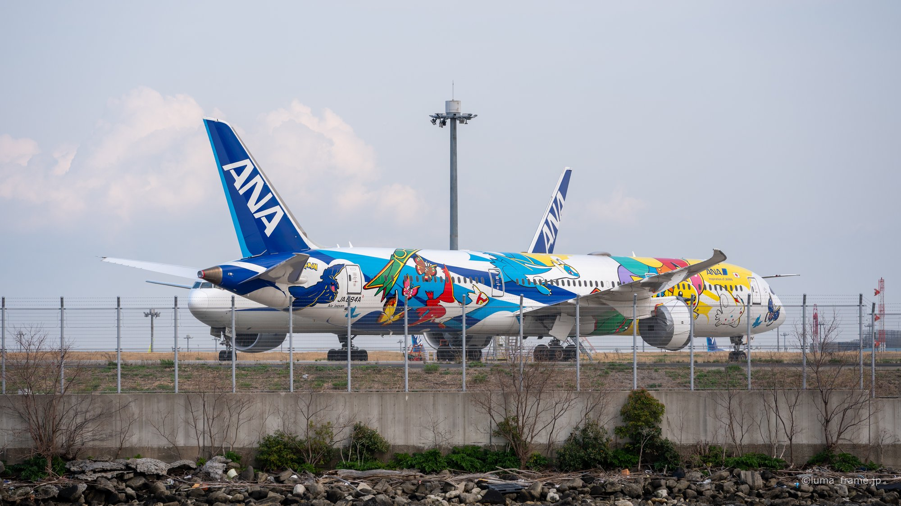
The first frame, at 16:05, is 180mm, 1/400s, f5.6. It reaches across the water to an aircraft on the far apron, still a long way off. From here I stayed in one spot for roughly an hour.
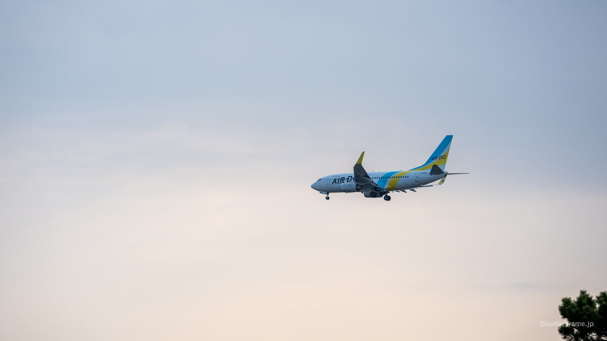
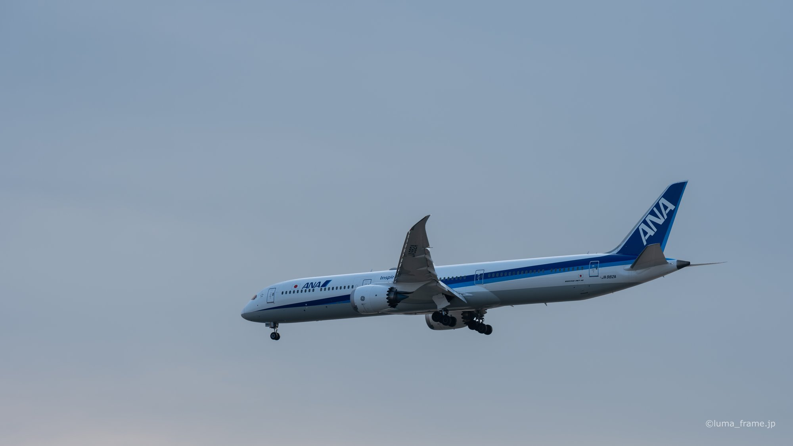
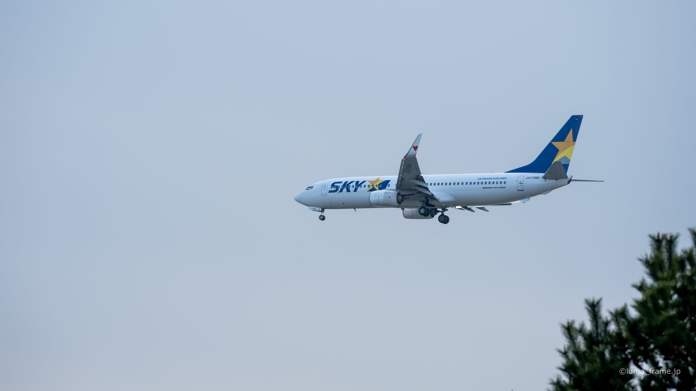
As the aircraft came closer I left the aperture at f5.6 and let only the shutter go, from 1/400s down to 1/250s. In bright sky 1/400s freezes everything; as the light thins, so does the speed you can hold.
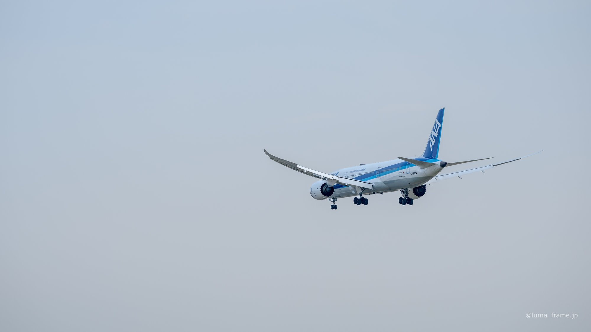
Fixing ISO at 100 means that when the light runs out, either the shutter or the aperture has to give. I gave up the shutter first and held f5.6, because I did not want the seawall and the far terminals dissolving into nothing.
At 16:22, a 787 with its gear down at 180mm and 1/250s. This close, the nose and main gear fill the frame on their own.
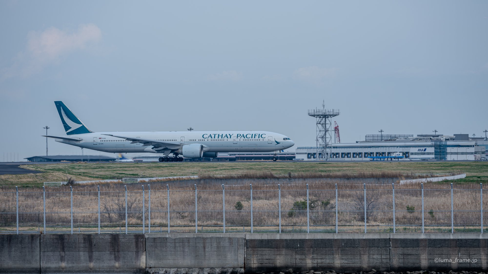
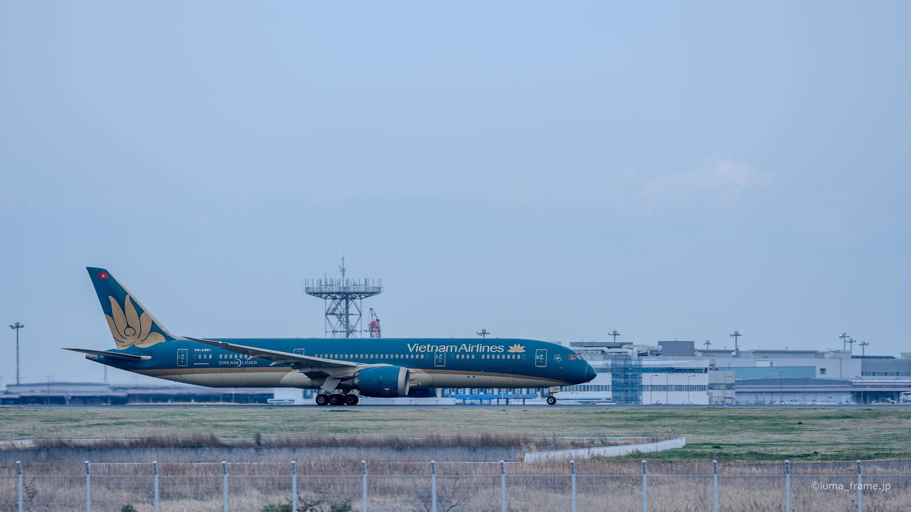
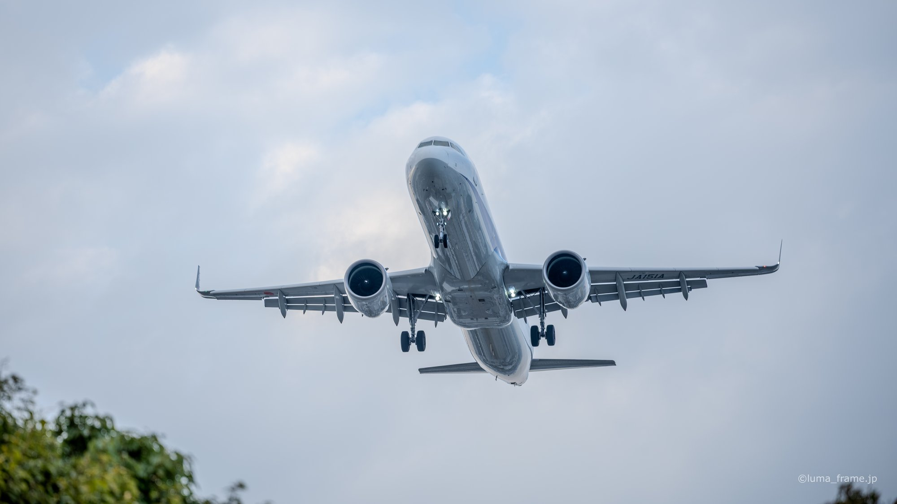
From 16:28 I worked the focal length back toward 70mm. At the long end the aircraft owns the frame. Pull wide and the trees and cloud come in with it, and you can read how low the aircraft actually is.
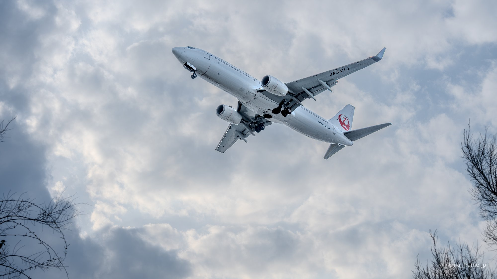
At the same 1/250s and f5.6, a 70mm frame over the treeline and a 180mm frame on the nose are two different photographs. Getting both without moving your feet is what makes this park easy to work.
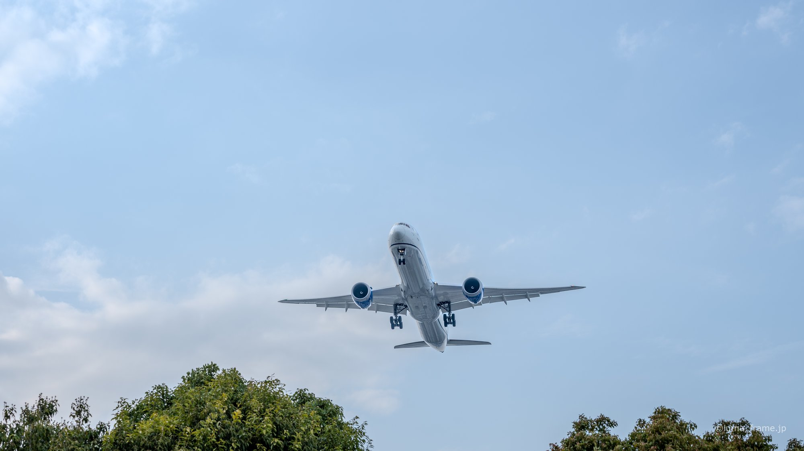
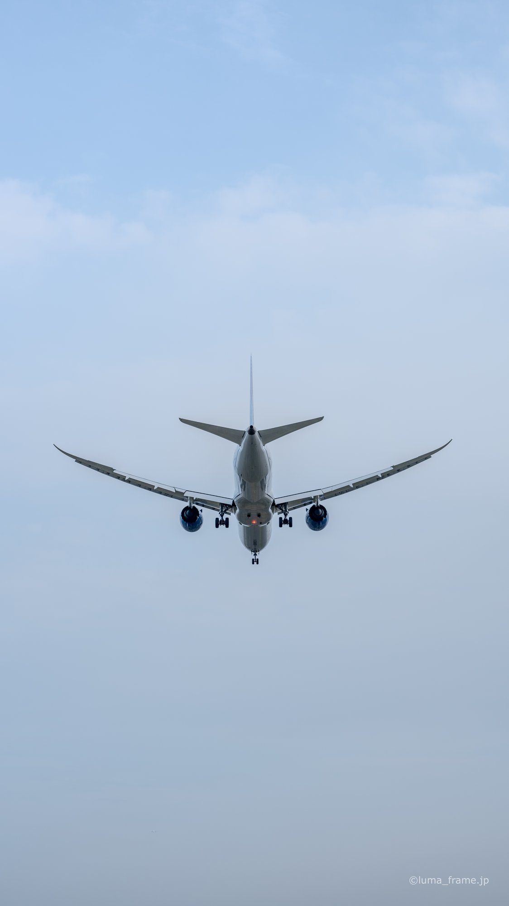
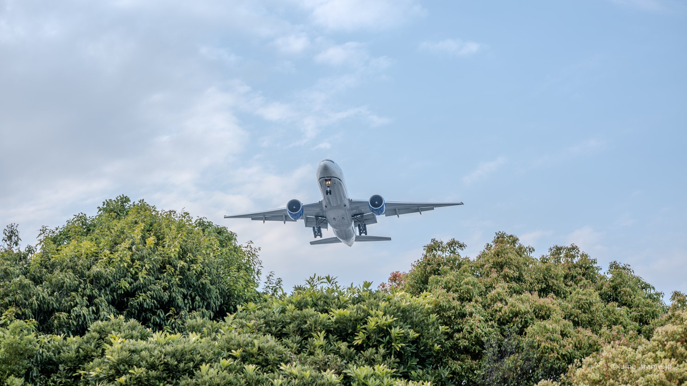
After 17:00 the shutter came down to 1/200s and the aperture opened to f4. Holding ISO 100, that is the order things give way in. The last frame is 17:27, at 180mm, 1/200s, f2.8, wide open, and that was where I stopped.
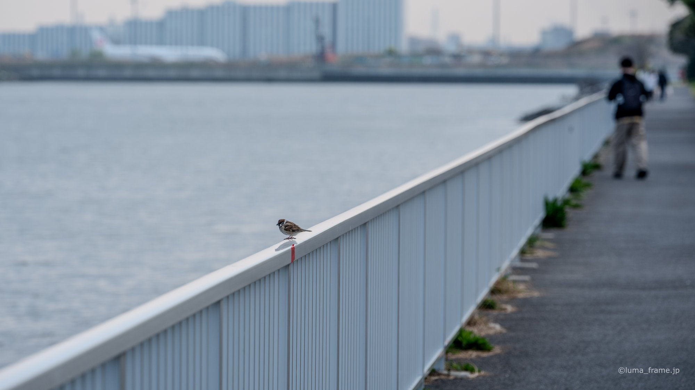
Not everything here is an aircraft. The promenade along the water, and someone else working a camera. The frames at 16:17 and 16:18 are about the place rather than what is flying over it. Later that evening I moved on to Haneda and started shooting the stands at 18:28.
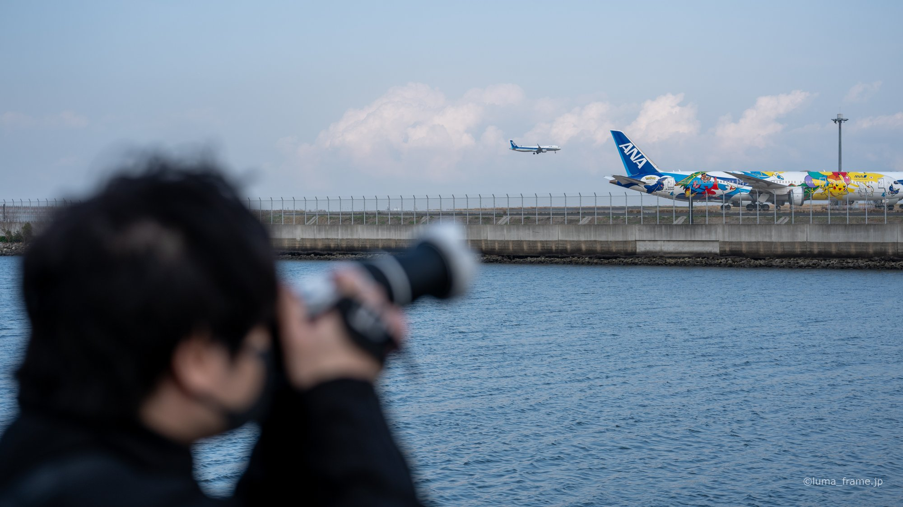
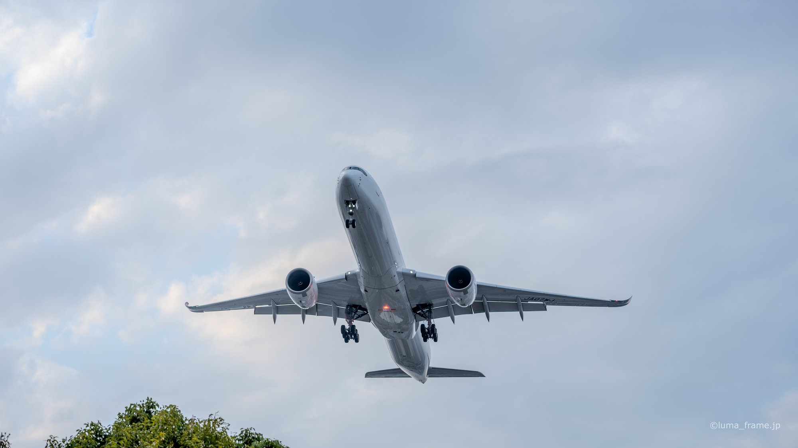
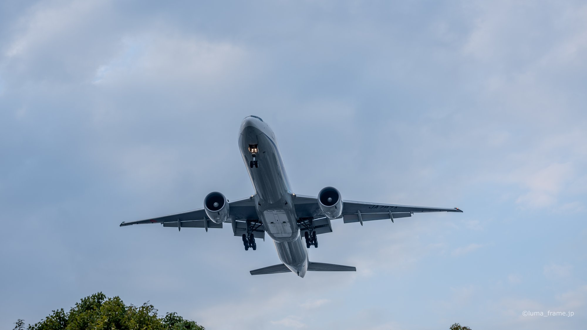
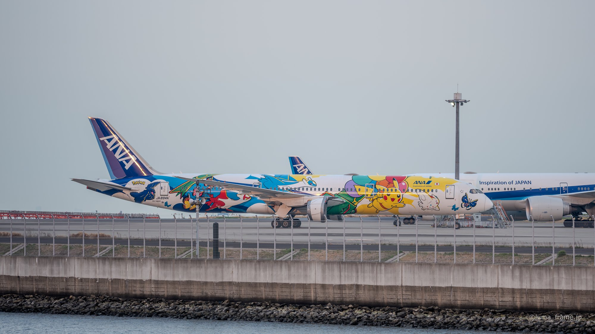
Airport and landscape shoots start at ¥22,000 (tax incl.) for half a day. Tell me the aircraft or the light you want and we plan from there.
Recent frames from each location go up on the account, including ones that never make it onto this site.